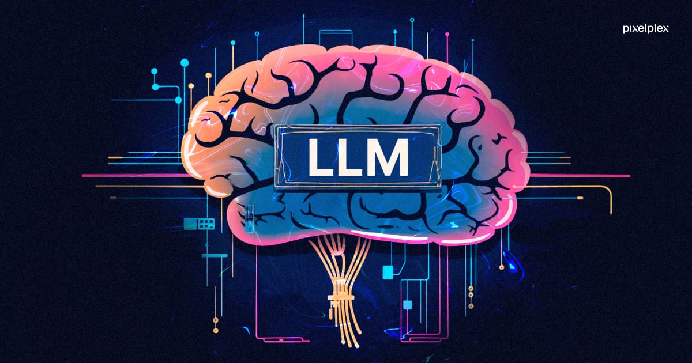

Projects

Project 1: Predictive Maintenance Solution
An end-to-end predictive maintenance solution harnessing sensor data and machine learning to forecast jet engine health and optimize maintenance schedules

Project 2: BLG log classification using NLP
A comprehensive solution that transforms raw BGL logs into actionable insights through advanced NLP, robust API deployment, and interactive PowerBI dashboards

Project 3: Cold Email Generator using LLM
A production-ready Cold Email Generator that scrapes job details from careers pages and leverages LLM to craft personalized outreach emails, all containerized and CI/CD-enabled.
GenAI post generator for health content
A comprehensive GenAI solution that generates tailored health content through advanced NLP and seamless, containerized deployment.